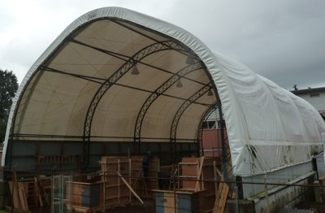

Membrana de tracción o techo de tela[RMT11]
El techo está construido por tela, incluyendo membranas a tracción, estructuras de telas inflables, y otros tipos de techo en hojas tejidas.
una membrana a tracción está hecha de tela estirada, usualmente en las dos direcciones para formar uns superficie a tensión. Ememplos de membranas a tracción incluyen PVC recubiertos de poliéster y fibra de vidrio recubierta con teflón.
Un techo inflable usa cámaras de tela presurizadas con aire para formar la estructura autoportante.
También incluye otro tipo de tela no inflable o estirable como membranas a tracción, e incluye hojas de plástico, lona alquitranada, láminas de lona.

Canada Place en Vancouver, es un ejemplo de estructuras de techos con telas a tracción (S. Brzev)

Un ejemplo de un techo de tela S. Brzev)